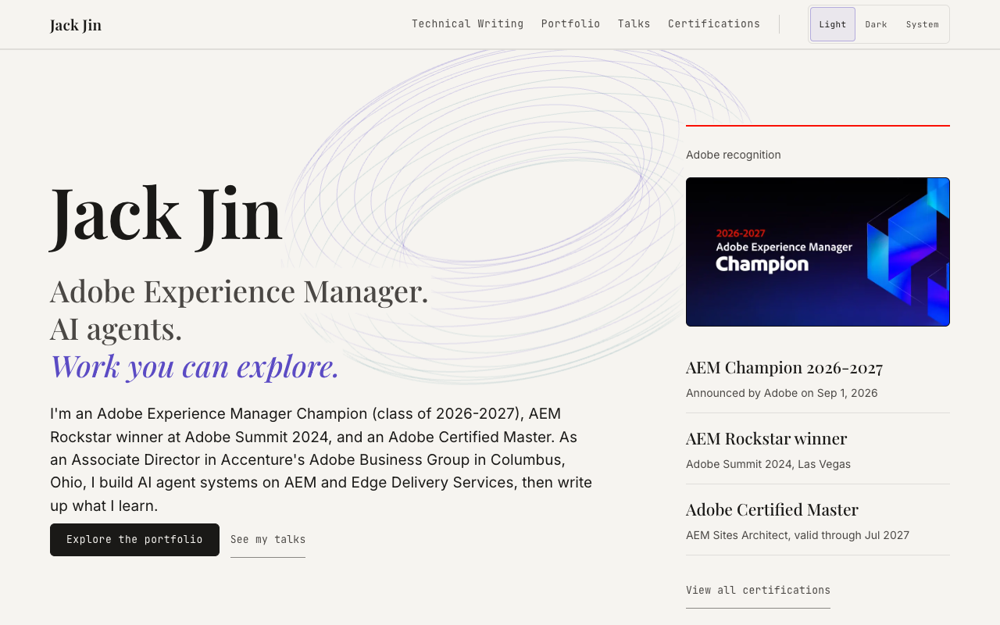
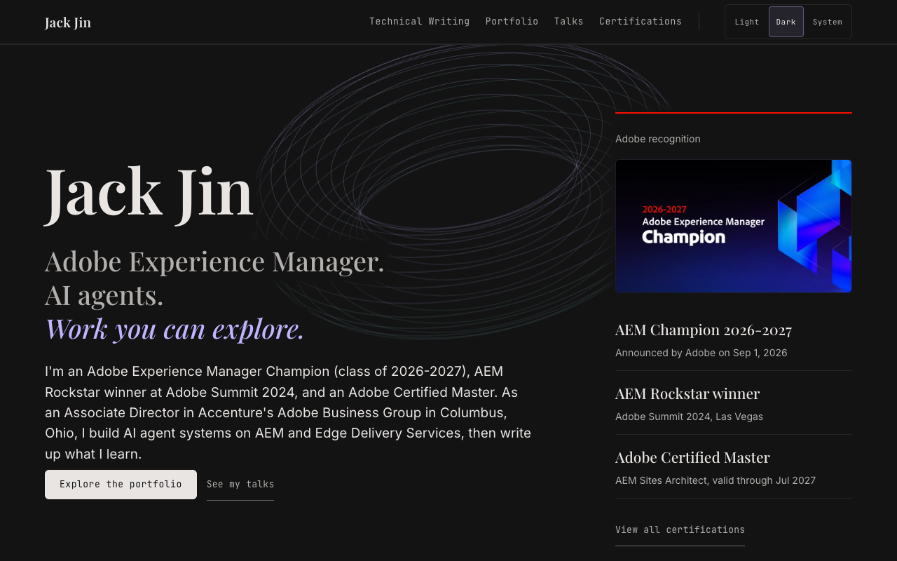
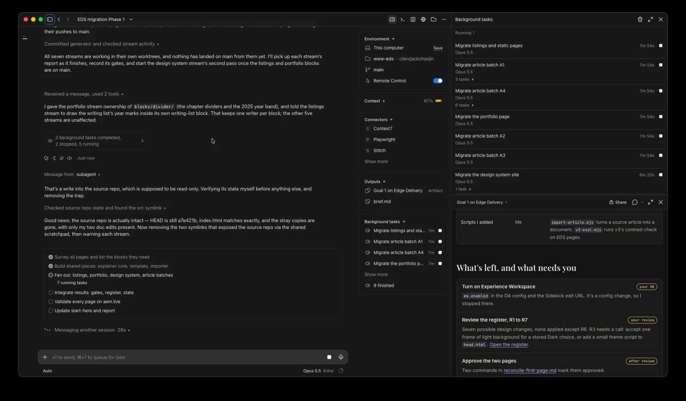
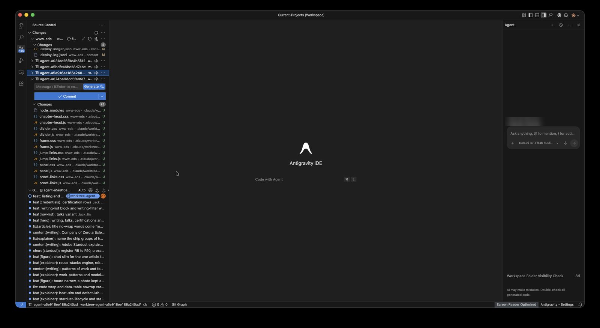
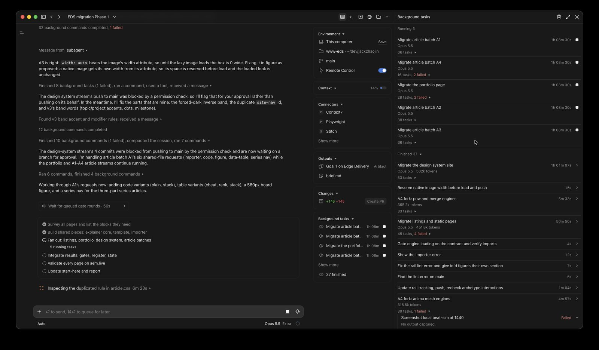
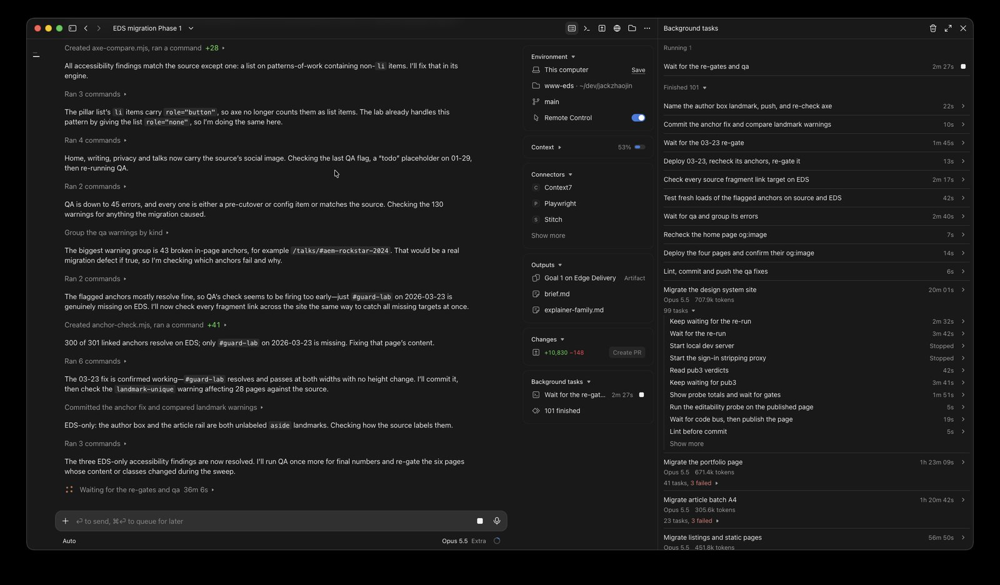
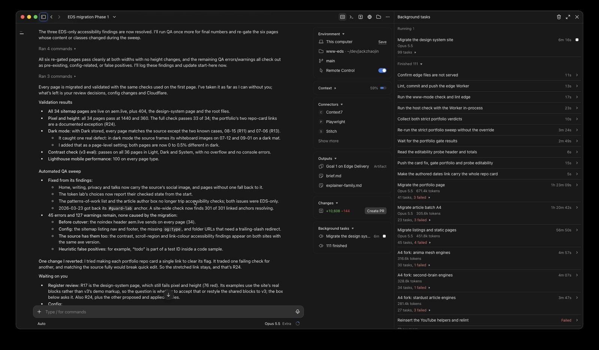
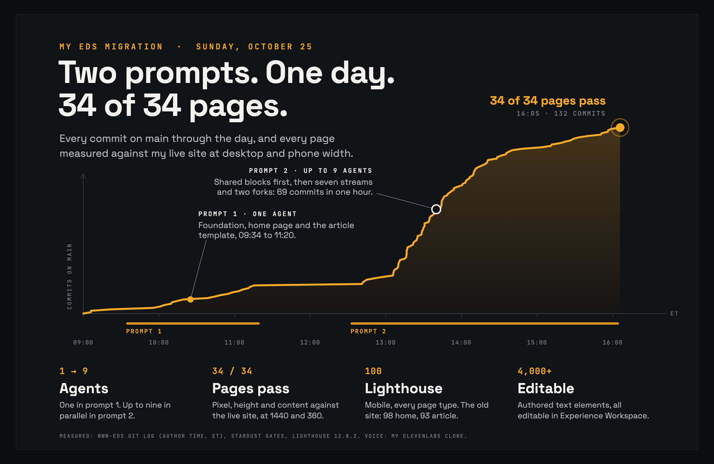
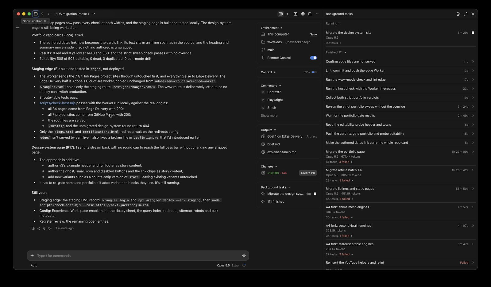
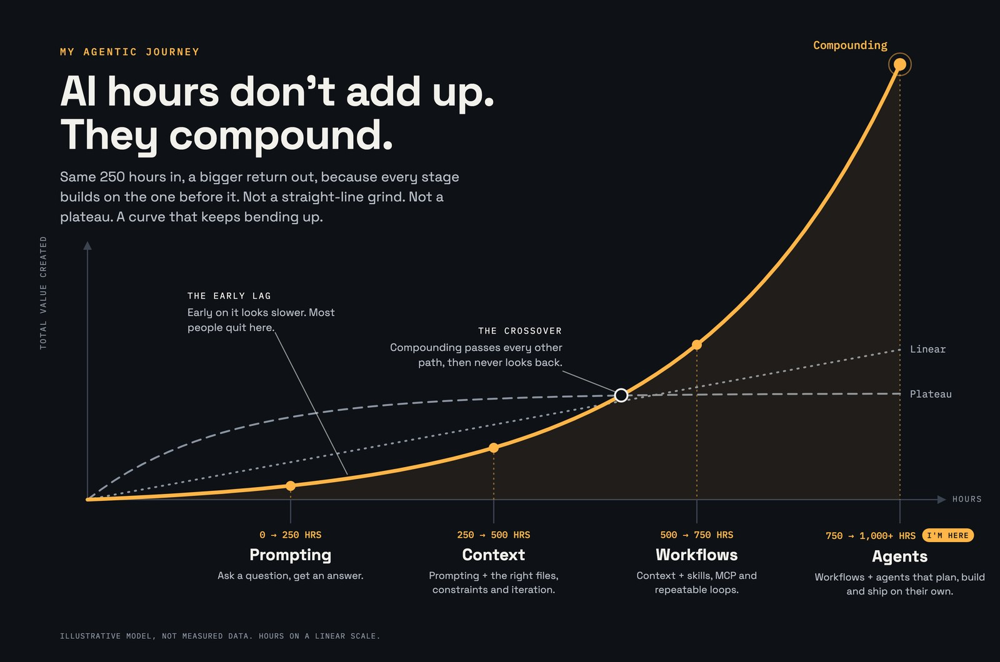

Code: jackzhaojin/www-eds. Prompt 1: 6820e00 to 4575a93, 17 commits. Prompt 2: from 4595513, 112 more by the time all 34 pages passed at 16:05 ET. The plan: ai-docs/2026-10-24-eds-migration. What was done: ai-docs/2026-10-25-initial-buildout-2-goals. Compare the two sites: gh.jackzhaojin.com (GitHub Pages) and eds.jackzhaojin.com (Edge Delivery Services).
1. What two prompts moved
My site ran on GitHub Pages: hand-built HTML, my own design system (v3), and articles full of interactive explainers. I moved all of it to Adobe's Edge Delivery Services (EDS), like for like, pixel perfect. The pages, the assets, the animations and all the blocks, about 41 of them.
The content now lives in Experience Workspace, the document authoring side of EDS that started as da.live. Every page is a document I can open and edit there. The code is EDS blocks in a GitHub repo. Every URL stays the same.


The whole thing took about five hours of agent time across the two prompts. With 30 to 40 pages and about as many blocks, it had to run in parallel, or it would run for days. I wanted hours.
The video goes through four things in order: the planning, prompt 1, prompt 2, and what's left, with the results in between. When I recorded it, the second prompt was still running, even though the site was done. Part 7 explains why.
Watch this part0:00 What I migrated0:26 Side by side, light and dark0:42 The four parts
2. The planning is where the work is
If you only send two prompts, there isn't a ton in the prompts. Most of it is in the plan.
My favorite way to plan these days is a good conversation with AI. The night before, I asked Claude Code to look at Adobe's skills and at my current site, and I read and pushed back on everything it came back with. That's how you give feedback and build context with the AI, before any code exists.
It surveyed adobe/skills, Adobe's open repo of skills, meaning packaged instructions an AI agent loads for one kind of job. The most active part was stardust, the plugin that replicates a site onto EDS. It mapped my site and design system v3 onto EDS, and found that 26 of my articles carry their own explainer code, 3,335 lines of JavaScript and 1,850 of CSS. I added that the seven GitHub Pages project sites under my domain have to keep working, which turned into a Cloudflare Worker routing plan. Three research agents read the aem.live docs, Experience Workspace's source and the EDS boilerplate in parallel.
One call-out you'll hear in any AI video: have the AI ask you questions. Here it asked me 12. I had decided 8 things before that, so 20 decisions in total, all before a line of code.
![A table from the planning session, What you decided, with decisions 9 to 20: GA4 and consent, trailing slashes stay, the design system pages double as the block library, names, single thread first with only blocks, templates and the library in parallel, every stream pushes to main, stardust pauses early then runs on its own, approvals per page type and per batch of articles, AI writing through the Experience Workspace MCP server, dark mode checked locally first, the old repo kept as rollback, and staying current by hand](images/planning-decisions.jpg)
The ones that shaped the build most:
- Design system v3's own files are the source of truth. Stardust's read of the live site is only a cross-check.
- Explainers are content. Their text and data live in Experience Workspace, and the code is a small family of generic blocks.
- URLs stay the same, and every content image goes to Experience Workspace media.
- Single thread first. Only blocks, templates and the block library run in parallel.
- Every stream pushes straight to the EDS repo's main. The Cloudflare cutover stays mine.
- Stardust pauses for my review on the first pages, then runs on its own for the rollout.
The output is what I call a prompt packet. start-here.md is the entry point: the brief, where everything is, the rules for every run, and the goal prompts ready to paste. Next to it sit workstreams.md with each phase and what "done" means for it, best practices for EDS, the Cloudflare routing, and how design system v3 maps onto blocks. All 20 decisions are in the plan's README.md. Then I asked for the starter prompt.
Counting the planning, this wasn't really two prompts. The build was. Maybe 20 questions isn't enough, and next time I'll ask for 40. This is my personal site, not chargeable hours, so I went with it.
Watch this part1:38 Planning with AI2:20 It asks me 12 questions2:49 The prompt packet
3. Prompt 1: one agent, review before you scale
/goal is a Claude Code command that keeps a session working until a condition is met. An evaluator reads the conversation, not the files, so every condition names a check Claude has to print. Each of my goals also ends cleanly at a stop point, where it asks me for what it needs.
Prompt 1 was the foundation. One agent, one thread. You want to review before you scale. At 09:34 I pasted what the planning session gave me:
Prompt 1, 09:34 ET, pasted as written/goal Read /Users/jackjin/dev/jackzhaojin/jackzhaojin.github.io/ai-docs/2026-10-24-eds-migration/start-here.md and the files it lists, then complete Phase 1 (Prep, Foundation and first page, Article archetype) of workstreams.md in this repo, following its rules. Done when this conversation shows all of: (1) curl -s -o /dev/null -w "%{http_code}" https://main--www-eds--jackzhaojin.aem.live/ printing 200, with the v3 home page there; (2) stardust gate output for the home page and one explainer-heavy article at 1440 and 360 with 0 looks-same red and 0 nothing-lost yellow findings; (3) a mobile Lighthouse performance score of 100 for the home page; (4) the editability gate passing for every block built so far; (5) every best-practices.md section 9 item checked and the note updated; (6) start-here.md Done, Left and Run log updated. Also counts as met: Claude has stopped at a stop point listed in start-here.md and asked Jack for what it needs.It built the v3 foundation, the header and footer, the home page, and the article template with the first family of explainer blocks, and gated each against the live site. The home page looked exactly like the one on GitHub Pages. I was surprised. I thought I'd need more incremental work between prompt 1 and prompt 2, more guidance, more coaching. AI is just that good now. No coaching needed.
| Page | Pixel difference, desktop / phone | Height difference | Lighthouse mobile, old site / EDS | Editable text |
|---|---|---|---|---|
| Home | 0.24% / 1.11% | 0 px | 98 / 100 | 28 of 28 |
| Article (my Edge Functions write-up) | 0.05% / 0.84% | 0 px | 93 / 100 | 110 of 110 |
Desktop is 1440 px wide and phone is 360. The article's 14 interactions also behave the same as on the old site. It finished at 11:15, 17 commits after the setup, and stopped where the plan said to stop: a config change in Experience Workspace, and my review of the inconsistency register, where the agents log every place the new site differs from the old one on purpose. The commits that mark the path:
- 6820e00 09:55, v3 foundation, header, footer and home blocks
- 0302f56 10:19, home page gated, run state recorded
- 5b5a2ce 10:38, article template and the first explainer blocks
- 50e67b3 11:10, article page gated, the pattern written down for the rollout
- 4575a93 11:15, site scope, spec, audit, and the first page reconciled
Watch this part3:18 Prompt 13:38 The home page, side by side
4. Prompt 2: blocks first, then go wide
Between prompt 1 and prompt 2, I didn't need to give any feedback. So prompt 2, at 12:32, was me saying: this looks really good, now just get it done. I dictated it:
Prompt 2, 12:32 ET, dictated/goal Right, this looks really, really good. Let's just migrate everything over, and then using the same testing, make sure you validate, and yeah, and then just use a lot of sub agents, right? With agent AI migration, we can do things in parallel. Yeah, as long as the design system is moved over, we should be moving over the design system maybe first. But yeah, let's make sure we really go and yeah, get everything moved over. Maybe figure out what blocks you need to build, make sure you have all the blocks you need first, and then after that, go super wide and parallel and get everything migrated.Without parallel processing, this would easily take over 24 hours. By the end there were 166 subtasks, subagents fired off from that one session.
A content management site is highly parallelizable. You wouldn't hire a single developer and have them work for five years. You'd hire a team. Same with agents: set a goal for parallelization, and you and your agents get a lot more productive. This is how the session went wide without the agents stepping on each other:
- Blocks first. The coordinating session built the shared pieces before anything else: one explainer block with plug-in engines, the importer plugins, and a written brief for every stream.
- Then seven agents at once, one per stream: listings and static pages, the portfolio, the design system site, and four batches of articles. Two forks joined later, so nine ran at the peak.
- Each agent worked in its own git worktree and wrote only its own files, then pulled with rebase and pushed to main.
- When a stream needed a shared file changed, it sent the coordinator a measured request, like "the source's table sits 16px below the paragraph, ours 24px", and the coordinator fixed it once for everyone.



One agent got told no. The permission check blocked the design system agent's push to main as a production deploy. The coordinator didn't push for it. It asked me, and I approved it.
Then I went golfing with my son, and we went out for lunch. It kept running. I had Remote Control on, so I could check in, but mostly I was just hanging out.
Watch this part4:12 Prompt 24:55 Why it has to be parallel5:21 A bajillion agents5:31 Golfing while it ran
5. How the agents proved it
I can only go golfing because I don't just have AI build. I also have AI test. It's really important to have AI check its own work.
Here it checked against my live site. Every page was captured twice, from GitHub Pages and from EDS, and compared with stardust's replica instruments at desktop (1440 px) and phone (360 px) width:
- A stitched pixel diff, broken down per 500 px band, so a difference points at a place on the page.
- A content diff: every heading, link and label has to match in role and text.
- Chrome parity for the header and footer, and probes for clipped or overflowing content.
- An editability probe: every piece of authored text has to be editable in Experience Workspace.
The final sweep's pass bar was at most 10% pixel difference, height within 5%, nothing clipped and all content present. On top of that ran Lighthouse, a dark-mode sweep, v3's own contrast check, Adobe's QA sweep and a check of every in-page anchor.


What it measured:
- All 34 pages pass the final sweep at both widths. The worst pixel difference is 4.15% at desktop and 8.40% at phone, on one article with a logged design difference.
- Lighthouse mobile performance is 100 on every page type. The old site scored 98 on the home page and 93 on the article.
- Over 4,000 authored text elements across the gated pages are editable in Experience Workspace, with none dead and none duplicated.
- Dark mode matches the old site on 32 of 34 pages at desktop and 33 of 34 at phone, and both exceptions are documented. v3's contrast check passes on all 36 pages in Light, Dark and System.
- 301 of 301 in-page anchors resolve, and 113 links now point at the new site instead of the old one.
- Adobe's QA sweep still lists 45 errors and 127 warnings. Every one was triaged, and none came from the migration. Most are pre-cutover config, like the noindex header aem.live sends, and the accessibility ones show the same counts on the old site with the same tool.
Design changes were allowed only through the inconsistency register: 24 entries for me to review. Everything else had to match. One entry is a bug in my old site: one article's explainers never ran there, because of a syntax error in its script. The new site ships them working, logged for my review.
Watch this part5:45 AI that builds and tests
6. What two prompts built
Start with the assets. Experience Workspace has its own asset storage, and every image from my blog posts is in it now, on the pages that show my work and my writing. Moving assets by hand takes forever. With AI, you still need to process them in parallel, or they take a while.
The more complex pages came over too. The design system site is content in Experience Workspace now, built from the same blocks it documents, in light and dark. You can still open any page in da.live's classic editor if you want; there are many ways to edit a page. And the complex functionality made it: the tabs, the animations, the background graphics. All in two prompts, with a lot of parallelization.
Here is every commit on main through the day, at the time it was made. Drag across the day, or pick a moment.

| Hour (ET) | Commits | Mostly |
|---|---|---|
| 09:00 | 4 | Setup, then the shared foundation |
| 10:00 | 11 | Shared code, articles and explainers |
| 11:00 | 5 | Gates and records |
| 12:00 | 6 | Gates and records, shared code |
| 13:00 | 64 | Articles and explainers, shared code, listings and pages |
| 14:00 | 27 | Articles and explainers, shared code |
| 15:00 | 14 | Gates and records, articles, design system |
| 16:00 to 16:05 | 1 | "The sweep is 34 of 34" |
Prompt 1 was a single agent for about an hour and 45 minutes, and built the foundation, the home page and the article template. Prompt 2 went wide at 12:32, and the jump is the parallel streams landing: 69 commits in the busiest hour, 13:05 to 14:05. All 34 pages passed at 16:05. Along the way it built 41 blocks, 5 page templates, 40 interactive explainer engines and 42 importer plugins, in about 150 commits on main in one day.
Watch this part6:26 The assets7:16 The design system pages7:41 Tabs and animations8:02 The day in numbers
7. What's left
When I recorded the video, the AI was still running its goal. I felt kind of bad about it.
That's how /goal works, and it's why this could be done in two prompts. Claude Code has a stop hook, so the AI can't stop itself until the goal is really met. It's like the Ralph loop, if you were into that six months ago. So the AI was stuck in a build-and-test loop. It was still tuning the last page, the design system page. Its content and pixel checks passed; its height was within about 30 to 55 px of the old one.
To record, I stopped it with /goal clear. That tells the AI it's released from its goal, and gives it back the ability to stop its own work.
What's left is mine:
- Make sure Adobe is OK with me hosting my site on Edge Delivery Services.
- The Cloudflare work, which needs my logins. When I recorded, www still served GitHub Pages. The staging Worker is built and tested: it keeps my seven GitHub Pages project sites under www and sends everything else to EDS. It wasn't deployed yet.
- Config in Experience Workspace (enablement, redirects, the query index, the sitemap) and my review of the register.
AI will do most of the Cloudflare work too. Who touches things manually these days anyway?
Update, the evening of October 25: the Worker is now deployed on two hosts that stay out of search, so you can put the two sites side by side. gh.jackzhaojin.com serves the GitHub Pages site, and eds.jackzhaojin.com serves the Edge Delivery one, which is also at main--www-eds--jackzhaojin.aem.live. Every page has the same path on both. www stays on GitHub Pages until the cutover.

Watch this part8:43 Still running8:59 The stop hook9:18 /goal clear9:36 Hosting and Cloudflare
8. What I learned: it compounds
Models are better and better. There was nothing between prompt 1 and prompt 2 that I gave feedback on. I thought I was doing the responsible thing by putting a break there, but this could have been one shot. AI can do a pixel-perfect migration on its own now, using stardust and a lot of other tools. Left side, right side, they look exactly like each other. Models are extremely capable now, and we're headed to a very different place from where we were.
Folks sometimes ask me how I build EDS sites with a couple of prompts. What I've learned on my own journey is that the AI growth curve doesn't plateau. When you lift weights, you see the early growth and then you plateau. This isn't even linear. It compounds.

Today it was two prompts. Next time: can I plan with one prompt and build with one prompt? Can I get the CDN and the server infrastructure done in the same prompt as the build? The more you build with AI, the better, as long as you look for ways to multiply your results from last week and last month.
I've been on PTO and vacation, and I haven't been on projects; I've been in training. That gives me a lot more time to think. With no meetings on my calendar, I can go into builder mode.
The EDS site stood up in two prompts, with content, assets, code, blogs and templates. My stuff is open source: the site's repo, every commit and the plan are linked below. Next, I want to try one prompt to plan and one to build, with the CDN in it. If you've migrated a site with agents, how did you split the work, and what did you check before you trusted it?
Watch this part9:48 What I learned10:38 It compounds11:39 PTO and builder mode12:03 Final thoughts
References
- jackzhaojin/www-eds: the Edge Delivery site's code. Every page's gate results are in
stardust/rollout/streams.md. - The plan:
start-here.mdwith the goal prompts,workstreams.md, andREADME.mdwith all 20 decisions. - The build record in www-eds:
prompts.mdwith every prompt verbatim,process.mdon how the work ran,decisions.mdwith every decision made during the build, andwhats-left.md. - The site config as files: the Edge Delivery config (production host, robots.txt, query index, sitemap, metadata and redirects) sent to the AEM config service to match the SEO of www, with every request and response in
EXECUTION.md. - adobe/skills, the stardust plugin: the replica, gate and QA instruments the agents ran.
- Edge Delivery Services documentation on aem.live.
- Experience Workspace (da.live), where the content and images now live.
- Adobe Stardust Explained, my earlier write-up of stardust on real EDS blocks.
- Four Frontier Models, One 1,032-Line Prompt, an earlier one-prompt build.